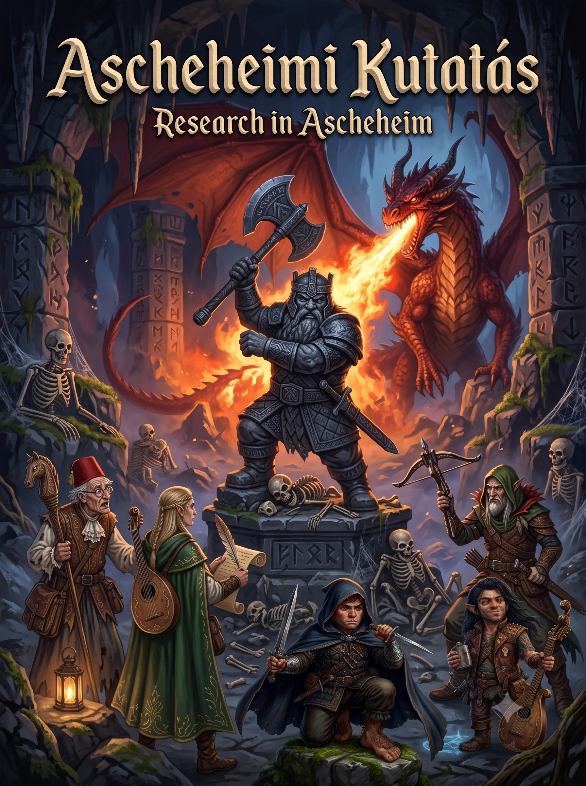

Ascheheimi Kutatás
Öt valószínűtlen hős, egy kővé dermedt törpkirályság, és egy aprócska probléma egy vörös sárkánnyal. Pepe, a kiégett kőgnóm bárd mesél a balul elsült expedícióról.
HAMAROSAN
Vár a következő történet...
Ismeretlen Vizeken
A mesélő (DM) titkai még sűrű ködbe burkolóznak. Amint a kockák újra gurulnak, ide kerül a következő eposzi kalandunk leirata.